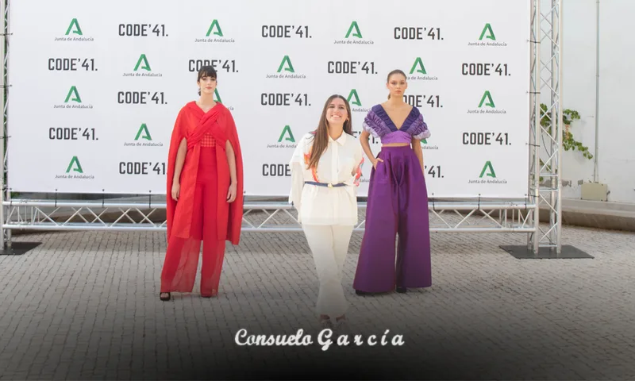

2020 · Fundación
Nace Consuelo García
Una semana antes de la pandemia nace la marca, como homenaje a una madre modista y oda a la alegría.
Ver trayectoria →Liberalidad, alabanza, esperanza, ánimo, generosidad, virtud y grandeza.
Ver colección"Prendas de edición limitada, confeccionadas a mano por mujeres artesanas en Utrera, Sevilla."
Cada pieza es única, hecha con amor y dedicación en nuestro taller.
Tercera generación de modistas, nacida y criada rodeada de telas e hilos. Economista por la Universidad de Sevilla y apasionada del arte, fundé Consuelo García en 2020 como una oda a la alegría, la esperanza y las ganas de vivir.
Una marca que nació como homenaje a mi madre y que lleva en su esencia el color, la forma, la comodidad y el trabajo artesanal.
Conoce mi historiaTodas nuestras prendas se confeccionan en nuestro taller de Utrera. Creamos vestidos de novia y vestidos a medida para bodas, eventos y fiestas, acompañándote desde el primer boceto hasta la entrega final.
Descubre el procesoUna semana antes de la pandemia nace la marca, como homenaje a una madre modista y oda a la alegría.
Ver trayectoria →
Presentamos nuestra primera colección, una celebración del color, la forma y la artesanía sevillana.
Ver trayectoria →
Consuelo García Atelier gana el premio Code 41, un reconocimiento a la moda artesanal española.
Ver trayectoria →